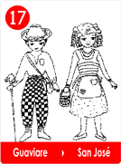
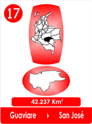
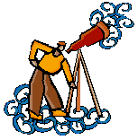
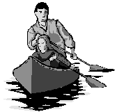
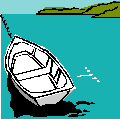
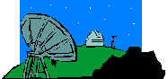

17 Un Ojo Al Cielo - Guaviare.
- Consulta a Jesús
- Fábulas de Colombia
- Metodo Corima
- Arbol
- Flor
- Fruto
- Estrellas Pequeñas
- Nostradamus
- La Ruta del Sol
- Fabula de Corima
- Productos y Servicios
- Mensajeros Celestiales
- Juguemos
- Articulos
- Estrellas Humanas
- Herramientas
- Plantas Milagrosas
- Adorables Fechas
- Videos


Me llaman Yopo, porque cuando yo hablaba a media lengua, para todo yo decía "Yopo", por yo puedo, y así me quedé, soy bueno aprendiendo y me gusta todo.
Vivo en el sitio mas bello de la tierra, por que por aquí, aunque casi no viene nadie, hay tanto para ver y hacer, que todo el mundo vive ocupao. Por acá las cosas son distintas, mucha selva, mucho tapete verde, muchos ríos, mucha naturaleza y muchos animales, muy lindos.
Vivo con los compadres que me dan de todo, cuando a mis padres les tocó el tiempo de irse para el cielo, ellos me recibieron como familia, así es por aquí.
No tengo tiempo para aburrirme, los compadres tienen hartos chiquitos y siempre hay que ponerles cuidado para que no se metan en líos.
Claro que algo cambió, el día que llegó Don Carlo, un italiano Astrónomo que llegó del Inírida con muchos aparatos para hacer investigaciones sobre las estrellas como necesitaba un ayudante bien guapo y que no molestara ni le diera pereza de nada , me eligieron a mi.
|  |
Tengo 12 años, escribo y leo muy bien, se manejar la chalupa, tengo fuerza para el azadón, soy experto con el machete y ni que decir, cuando enlazo.
El me nombró su brújula, yo le dije que me gustaba mejor "Brújulo", el nombre iba más conmigo, porque soy hombrecito.
Mi gente vive en Tomachipa, lo que se llama un poblado, queda puro al frente del declive del río, con casas bonitas, son malocas pintadas de colores.
Don Carlo dice que parece un "presepio" y como aquí todos llevan un apodo, casi que lo llamo así "Don Presepio ", es un nombre que nos hizo reír mucho y quiere decir pesebre!
Estamos sobre el Río Inírida que es muy juguetón, hay un punto que brinca en tres escalones y llegan tantos peces que como no saben saltar, son los chulos los que aprovechan la fiesta.
Por aquí las cosas son bien distintas, cuando hay luna llena los animales de la selva se reúnen para mirar el río. Por eso se cuentan muchas historias, pero las mejores las iba yo a aprender con Don Carlo.
.
Soy buen motorista y la canoa es una de mi s habilidades, dicen que mi papá era un duro mucho mejor y como Don Carlo quería ir a los cerros de las pinturas rojas, que llaman rupestres, yo lo llevé y tomó muchas fotos.
Hasta le salieron los animales rojos, de esas pinturas viejas.
Don Carlo es muy gocetas, siempre dice que los paisajes de acá son los más bellos que el ha visto en su vida.
|  |  |
Nos instalamos en el cerro alto para la investigación de las estrellas, yo ayude a armar los telescopios, para mi eran un ojo al cielo, entonces encontré el apodo para Don Carlo, "El del ojo al Cielo ".
Luego conocí los nombres de los 44 animales de las constelaciones del cielo, supe donde estaba, Orión el gigante y me encantó la historia de la princesa Andrómeda con Perseo, cuando la rescata volando en Pegaso.
Mi amigo me enseño que entender las estrellas, es entender las historias de la gente y cuando sea grande, voy a estudiarlas y voy a ser Astrónomo en la Selva.
Don Carlo me prometió que aunque no tenga un observatorio como los que hay en otras partes, yo puedo ayudar además dice que arriba hay una estrella con mi nombre y que todo el mundo la tiene
Que brilla harto si uno se prepara bien, el me dijo que cada uno es libre de escoger que posición quiere en la vida, y que no solo los actores y actrices son estrellas.
|  |
El que escoge mal, puede meterse de Dragón, o gustarle la Hydra, que es como las serpientes venenosas de la selva y de las que uno tiene que cuidarse, o puede dormir como la osa.
Mi amigo el del "Ojo al Cielo, me hizo ver lo bueno que lo pasan los Astrónomos, no se meten en líos y opinan sin molestar a nadie.
Hasta me hizo reconocer el Tucán, nuestra ave de la selva y se reconocer el puesto de honor para Indus y celebrar lo bello de nuestra cultura indígena.
Mi identidad me tiene encantado, soy libre, no salvaje.